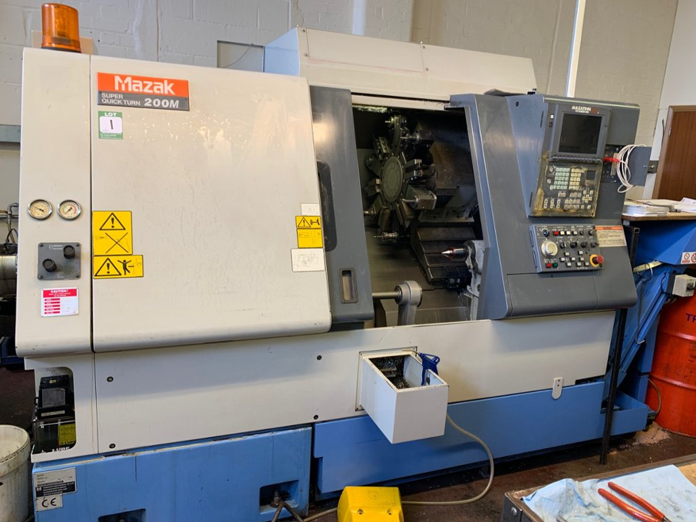
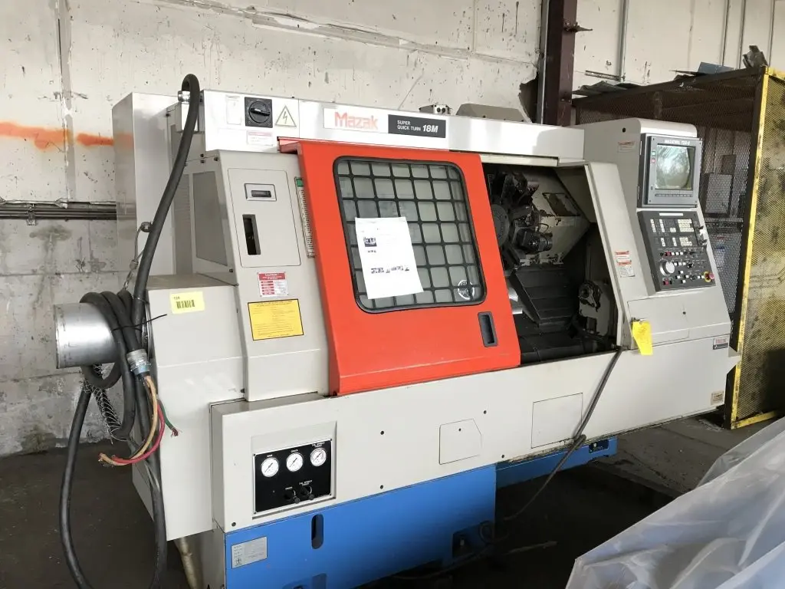
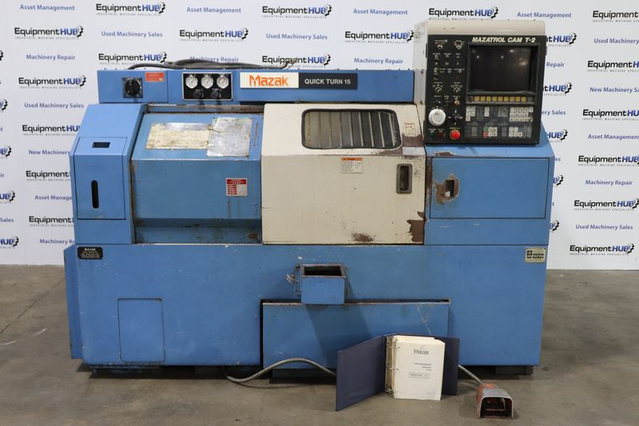

MAZAK
最新鋭
NC / No.01
MAZAK
最新鋭
NC / No.01
Quick Turn 300MY
MULTI-TASK TURNING CENTER / Y-AXIS / C-AXIS / MAZATROL SMOOTH G
最大旋削径
Ø 406 mm
最大旋削長
965 mm
Y軸ストローク
±52 mm
SPINDLE SPEED
3,500 rpm
CHUCK SIZE
10インチ
BAR CAPACITY
Ø 102 mm
TURRET
12 ステーション
MILLING SPEED
6,000 rpm
CONTROL
MAZATROL Smooth G
最新鋭機
Y軸複合
Cサーボ軸
ミーリング
NCテールストック

MAZAK NC / No.02Super Quick Turn 200
CNC TURNING CENTER / 2-AXIS / MAZATROL PC FUSION 640T
最大旋削径
Ø 300 mm
最大旋削長
534 mm
ベッド上振り
Ø 525 mm
SPINDLE SPEED
5,000 rpm
SPINDLE MOTOR
18.5 kW
X STROKE
180 mm
Z STROKE
575 mm
CHUCK
8インチ / A2-6
TURRET
12 ステーション
2軸CNC
高速主軸
テールストック

MAZAK NC / No.03Super Quick Turn 18M
CNC TURNING CENTER / LIVE TOOL / MAZATROL T-PLUS
最大旋削径
Ø 300 mm
最大旋削長
507 mm
ベッド上振り
Ø 531 mm
SPINDLE SPEED
4,000 rpm
SPINDLE MOTOR
18.5 kW
X STROKE
180 mm
Z STROKE
575 mm
BAR CAPACITY
Ø 64 mm
TURRET
12 ステーション
MILLING / ROTARY TOOL SPEED
120 – 3,000 rpm
ライブツール
Cサーボ軸
ミーリング対応
Quick Turn 15N
CNC TURNING CENTER / 2-AXIS / MAZATROL T32-2
最大旋削径
Ø 300 mm
最大旋削長
500 mm
ベッド上振り
Ø 440 mm
SPINDLE SPEED
4,500 rpm
SPINDLE MOTOR
15 kW (20 HP)
X STROKE
180 mm
Z STROKE
510 mm
CHUCK
8インチ / A2-6
TURRET
8 ステーション
RAPID TRAVERSE
30,000 mm/min (X・Z)
2軸CNC
テールストック
チップコンベア

MAZAK NC / No.05Quick Turn 15
CNC TURNING CENTER / 2-AXIS / MAZATROL T32
最大旋削径
Ø 265 mm
最大旋削長
500 mm
ベッド上振り
Ø 440 mm
SPINDLE SPEED
3,600 rpm
SPINDLE MOTOR
11 kW (15 HP)
X STROKE
220 mm
Z STROKE
510 mm
CHUCK
8インチ / A2-6
TURRET
8 ステーション
RAPID TRAVERSE
12,000 / 24,000 mm/min
2軸CNC
テールストック
多品種小ロット